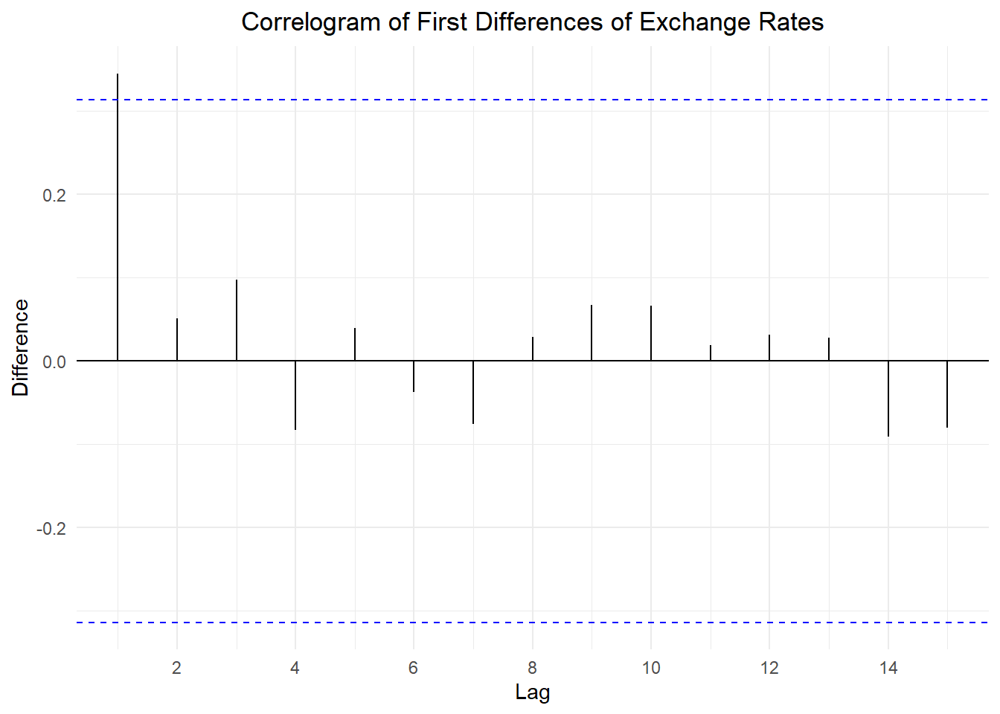

In many cases, differencing sequential terms of a non-stationary process can lead to a stationary process of differences. We can use the code below to obtain the daily closing stock prices for any publicly-traded company.
Show the code
library(tidyquant)# Set symbol and date rangesymbol <-"MCD"company <-"McDonald's"date_start <-"2020-07-01"date_end <-"2024-01-01"# Fetch stock prices (can be used to get new data)stock_df <-tq_get(symbol, from = date_start, to = date_end, get ="stock.prices")# Transform data into tsibblestock_ts <- stock_df %>%mutate(dates = date, value = adjusted ) %>% dplyr::select(dates, value) %>%as_tibble() %>%arrange(dates) |>mutate(diff = value -lag(value)) |>as_tsibble(index = dates, key =NULL)
The time plot in Figure 1 presents the closing price of McDonald’s stock from 01/07/2020 to 01/01/2024. Figure 2 gives the differences in the closing prices of the stock as a time series.
Show the code
plot_ly(stock_ts, x =~dates, y =~value, type ='scatter', mode ='lines') %>%layout(xaxis =list(title =paste0("Dates (", format(ymd(date_start), "%d/%m/%Y"), " to ", format(ymd(date_end), "%d/%m/%Y"), ")" ) ),yaxis =list(title ="Closing Price (US$)"),title =paste0("Time Plot of ", symbol, " Daily Closing Price") )
Figure 1: Plot of the daily closing price of the stock
Show the code
# Generate time series plot using plot_lyplot_ly(stock_ts, x =~dates, y =~diff, type ='scatter', mode ='lines') %>%layout(xaxis =list(title =paste0("Dates (", format(ymd(date_start), "%d/%m/%Y"), " to ", format(ymd(date_end), "%d/%m/%Y"), ")" ) ),yaxis =list(title ="Closing Price (US$)"),title =paste0("Difference of ", symbol, " Daily Closing Price") )
Figure 2: Plot of the stock price differences
Figure 3 is the correlogram for the original McDonald’s stock price time series. Figure 4 gives the correlogram for the differences in successive closing stock prices.
Show the code
acf(stock_ts$value, plot=TRUE, type ="correlation", lag.max =25)
Figure 3: Correlogram of the stock prices
Show the code
acf(stock_ts$diff |>na.omit(), plot=TRUE, type ="correlation", lag.max =25)
Figure 4: Correlogram of the stock prices
Figure 5 is a histogram of the differences. On the right, we give the variance of the differences in the stock prices. This is a simple measure of the volatility of the stock, or in other words, how much the price changes in a day.
Show the code
# Histogram of differences in stock pricesstock_ts |>mutate(density =dnorm(diff, mean(stock_ts$diff, na.rm =TRUE), sd(stock_ts$diff, na.rm =TRUE)) ) |>ggplot(aes(x = diff)) +geom_histogram(aes(y =after_stat(density)),color ="white", fill ="#56B4E9", binwidth =1) +geom_line(aes(x = diff, y = density)) +theme_bw() +labs(x ="Difference",y ="Frequency",title ="Histogram of Difference in the Closing Stock Prices" ) +theme(plot.title =element_text(hjust =0.5) )
Figure 5: Histogram of the stock price differences
The variance of the differences is 5.462.
Notice that the values in the correlogram of the stock prices start at 1 and slowly decay as \(k\) increases. There are no significant autocorrelations in the differenced values. This is exactly what we would expect from a random walk. It is also interesting that the differences are nearly normally distributed and uncorrelated.
Defintion of the Difference Operator
Differencing nonstationary time series often leads to a stationary series, so we will define a formal operator to express this process.
NoteDefinition of the Difference Operator
The difference operator, \(\nabla\), is defined as:
To see what this expression gives us, note that \(\nabla\) gives a new time series that is comprised of the differences between successive terms of the original time series. The operator \(\nabla^2\) generates a time series that is comprised of the differences between successive terms of the differenced time series. It is the difference of the differences, or the second difference.
Fill in the missing steps: \[\begin{align*}
\nabla^2 x_8 &= (1-\mathbf{B} )^2 x_8 \\
&= (1-\mathbf{B} ) \left[ (1-\mathbf{B} ) x_8 \right] \\
& ~~~~~~~~~~~~~~~~~~~~~~ ⋮ \\
&= (x_8-x_7)-(x_7-x_6)
\end{align*}\] and check that this is equal to the last term in the sequence of second differences.
$$t$$
$$x_t$$
$$\nabla x_t$$
$$\nabla^2 x_t$$
1
5
2
10
3
13
4
8
5
4
6
3
7
9
8
2
Small-Group Activity: Computing Differences
The difference operator can be helpful in identifying the functional underpinnings of a trend. If a function is linear, then the first differences of equally-spaced values will be constant. If a function is quadratic, then the second differences of equally-spaced values will be constant. If a function is cubic, then the third differences of equally-spaced values will be constant, and so on.
In this activity, you will apply what you have learned to a new stock.
TipCheck Your Understanding
Modify the code used to get the prices of McDonald’s stock to download closing stock prices for a different publicly-traded company over a time period of your choice.
Show the code
# Set symbol and date rangesymbol <-"MCD"# Stock trading symbol for McDonald'sdate_start <-"2020-07-01"date_end <-"2024-01-01"# Fetch stock prices (can be used to get new data)stock_df <-tq_get(symbol, from = date_start, to = date_end, get ="stock.prices")# Transform data into tsibblestock_ts <- stock_df %>%mutate(dates = date, value = adjusted ) %>% dplyr::select(dates, value) %>%as_tibble() %>%arrange(dates) |>mutate(diff = value -lag(value)) |>as_tsibble(index = dates, key =NULL)plot_ly(stock_ts, x =~dates, y =~value, type ='scatter', mode ='lines') %>%layout(xaxis =list(title =paste0("Dates (", format(ymd(date_start), "%d/%m/%Y"), " to ", format(ymd(date_end), "%d/%m/%Y"), ")" ) ),yaxis =list(title ="Closing Price (US$)"),title =paste0("Time Plot of ", symbol, " Daily Closing Price") )# Generate time series plot using plot_lyplot_ly(stock_ts, x =~dates, y =~diff, type ='scatter', mode ='lines') %>%layout(xaxis =list(title =paste0("Dates (", format(ymd(date_start), "%d/%m/%Y"), " to ", format(ymd(date_end), "%d/%m/%Y"), ")" ) ),yaxis =list(title ="Closing Price (US$)"),title =paste0("Difference of ", symbol, " Daily Closing Price"))# Autocorrelation function for stock pricesacf(stock_ts$value, plot=TRUE, type ="correlation", lag.max =25)# Autocorrelation function for differencesacf(stock_ts$diff |>na.omit(), plot=TRUE, type ="correlation", lag.max =25)# Histogram of differences in stock pricesstock_ts |>mutate(density =dnorm(diff, mean(stock_ts$diff, na.rm =TRUE), sd(stock_ts$diff, na.rm =TRUE)) ) |>ggplot(aes(x = diff)) +geom_histogram(aes(y =after_stat(density)),color ="white", fill ="#56B4E9", binwidth =1) +geom_line(aes(x = diff, y = density)) +theme_bw() +labs(x ="Difference",y ="Frequency",title ="Histogram of Difference in the Closing Stock Prices" ) +theme(plot.title =element_text(hjust =0.5) )# Variance of the differencesvar(stock_ts$diff, na.rm =TRUE)|>round(3)
Do the following.
Indicate which company you have chosen, the stock symbol, and the time period.
Create a time plot of the daily closing stock prices.
Produce a time plot of the differences in the daily closing stock prices.
Create a correlogram of the stock prices
Create a correlogram of the differences
Generate a histogram of the difference in the stock prices and superimpose the corresponding normal density.
Compute the variance of the differences
Compare your results with those from the other teams of students.
Optional Activity: Integrated Autoregressive Model (10 min)
Consider the correlogram of the first differences in the exchange rates.
Show the code
z_ts |>mutate(diff = xrate -lag(xrate)) |>ACF(diff) |>autoplot() +labs(title =paste("Correlogram of First Differences of Exchange Rates"),x ="Lag",y ="Difference" ) +theme_minimal() +theme(plot.title =element_text(hjust =0.5))
Warning: `autoplot.tbl_cf()` was deprecated in feasts 0.4.2.
ℹ Please use `ggtime::autoplot.tbl_cf()` instead.
ℹ Graphics functions have been moved to the {ggtime} package. Please use
`library(ggtime)` instead.

Notice that for a lag of \(k=1\), there is still a significant autocorrelation in the differences. This suggests that a more sophisticated model might be necessary. Note that for \(k>1\), the autocorrelations in the differences are not significant. So, a random walk might be a good model for the differences.
We can add an additional terms to the random walk model using the slope estimate from Holt-Winters. Assume the next term in the time series can be modeled as the previous term plus an estimated slope plus a white noise component. This gives us the first equation below. We will use the Holt-Winters update equation to estimate the slope. This is the second equation below.
Note: The value of beta obtained using the feasts model() statement is 0.155. This is slightly different than the value obtained using the base R HoltWinters() command: 0.167. This is likely due to differences in the implementation of the Holt-Winters model, including the initial conditions.
Start with the fitted system of equations \[
\begin{cases}
~~~x_t = x_{t-1} + b_{t-1} + w_t \\
b_{t-1} = 0.155 \left( x_{t-1} - x_{t-2} \right) + 0.845 ~ b_{t-2}
\end{cases}
\] Show that it can be written as \[
\left( 1 - \mathbf{B})^2 x_t = (1 - 0.845 \mathbf{B} \right) w_t
\] by completing the following steps.
Write the system of equations in terms of the backward shift operator.
Solve for the term \(\mathbf{B} b_t\) in the first equation and substitute the resulting expression into the second equation.
Combine like terms and simplify.
We will examine the residuals from the Holt-Winters model:
Show the code
z_hw <- z_model |>residuals()ACF(z_hw, .resid) |>autoplot() +labs(title =paste("Correlogram of Residuals from Holt-Winters Filtering"),x ="Date",y ="ACF" ) +theme_minimal() +theme(plot.title =element_text(hjust =0.5))
Notice that there are no significant autocorrelations, so we conclude that the Holt-Winters model yields reasonable estimates of the time series.
Class Activity: Random Walk with Drift (15 min)
We will now consider the daily closing price of Abercrombie & Fitch stock (Symbol = ANF). Here is a time series plot of the closing stock prices.
Show the code
# Set symbol and date rangesymbol <-"ANF"# Abercrombie & Fitch stock trading symboldate_start <-"2023-05-01"date_end <-"2024-02-20"# Fetch stock pricesdf_stock <-tq_get(symbol, from = date_start, to = date_end, get ="stock.prices")# Transform data into tsibbledf_tsibble <- df_stock |>mutate(dates = date, value = close ) |> dplyr::select(dates, value) |>as_tibble() |>arrange(dates) |>as_tsibble(index = dates, key =NULL)# Generate time series plot using plot_lyplot_ly(df_tsibble, x =~dates, y =~value, type ='scatter', mode ='lines') |>layout(xaxis =list(title ="Date"),yaxis =list(title ="Value"),title =paste0("Time Plot of ", symbol, " Daily Closing Price (", format(ymd(date_start), "%d %b %Y"), " - ", format(ymd(date_end), "%d %b %Y"),")") )
Figure 6: Time plot of the daily prices of ANF stock
We now generate a time plot and a correlogram of the differences. (No stock prices are recorded on weekends or holidays. Due to the gaps in the data, we will use the base R acf command, rather than the feasts ACF command.)
The mean of the differences is 0.486. The standard deviation of the differences is 1.732. There are 201 differences.
We can use the t-distribution to create a 95% confidence interval for the drift parameter. The critical \(t\) value is given by qt(0.975, df = 201 - 1), yielding a value of \(t^*_{0.975} = 1.972\).
This confidence interval does not contain 0, so we conclude that there is evidence of a positive drift in the price of Abercrombie & Fitch stock over this period.
TipCheck Your Understanding
Use the McDonald’s stock price data to do the following.
What is the estimate of the drift parameter?
What is the standard deviation of the differences?
What is the 95% confidence interval for the drift parameter?
Is there evidence to suggest that the time series can be modeled as a random walk with drift? Why or why not?
\[
\nabla^2 x_8
= \nabla \left( \nabla x_8 \right)
= ( x_8 - x_7 ) - ( x_7 - x_6 )
= (2 - 9) - (9 - 3) \\
= -13
\] This is the value of the last term in the sequence of second differences.
Start with this fitted system of equations. Show that it can be written as \[
(1 - \mathbf{B})^2 x_t = (1 - 0.845) w_t
\] by completing the following steps.
Use the McDonald’s stock price data to do the following.
What is the estimate of the drift parameter?
As seen above, there is no significant autocorrelation in the differences of the McDonald’s stock prices. They appear to be modeled well by white noise.
We now compute the mean and standard deviation of the differences.
mean(stock_ts$diff, na.rm =TRUE)
[1] 0.1357039
What is the standard deviation of the differences?
sd(stock_ts$diff, na.rm =TRUE)
[1] 2.336994
What is the 95% confidence interval for the drift parameter?
The number of differences, \(n\), is given by:
length(stock_ts$diff |>na.omit())
[1] 880
The mean of the differences is 0.136. The standard deviation of the differences is 2.337. There are 880 differences.
We can use the t-distribution to create a 95% confidence interval for the drift parameter. The critical \(t\) value is given by qt(0.975, df = 880 - 1), yielding a value of \(t^*_{0.975} = 1.963\).